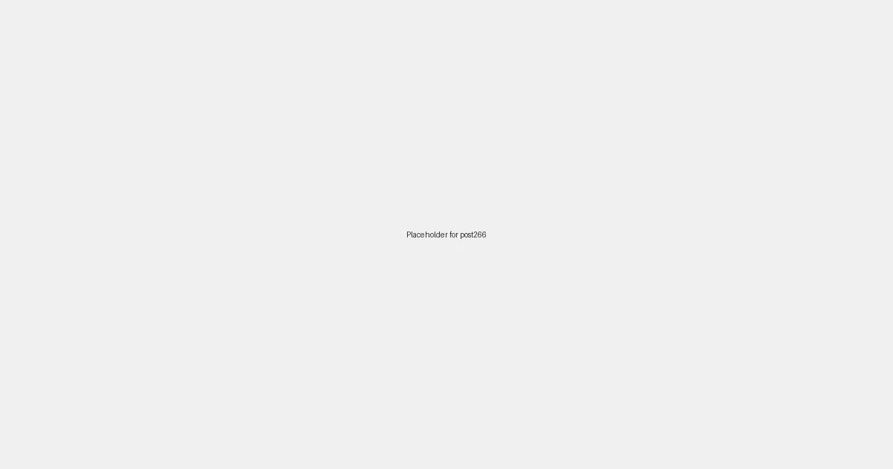

Local SEO for Plumbers: Unclogging Your Path to More Clients in 2026
For plumbers, every drip, leak, or clogged drain represents an opportunity to provide essential services and build trust within their community. In 2026, while reliable service and skilled craftsmanship remain paramount, a plumber's digital presence is equally crucial for reaching clients in need. Local SEO (Search Engine Optimization) has become the essential tool for plumbers looking to flow into local search results and unclog their path to more business. It's about ensuring that when potential clients in your area search for "plumber near me," "emergency plumbing [your city]," or "drain cleaning [your neighborhood]," your services are readily discovered.
Why Local SEO is Your Best Tool in the Plumbing Business
Plumbing issues are often urgent and highly localized. Homeowners and businesses seek out professionals who are close by, offer prompt service, and have a reputation for reliability within their community. Local SEO helps you bridge the gap between those with plumbing emergencies and your specialized services, helping you build a loyal clientele and a thriving local presence.
Key Benefits:
- Increased Service Calls: Attract more local clients actively searching for plumbing repairs, installations, and maintenance.
- Enhanced Visibility: Stand out in local search results, Google Maps, and local home services directories.
- Build Trust and Credibility: Showcase your expertise, client testimonials, and rapid response times to a targeted local audience.
- Competitive Edge: Differentiate your business from competitors by highlighting your specializations, certifications, and commitment to customer satisfaction.
Flowing Smoothly: Crafting Your Plumbing Business's Local SEO Strategy
Here’s how plumbers can develop a robust local SEO strategy:
-
Google Business Profile (GBP) Optimization:
- Claim and meticulously optimize your business's GBP. Include accurate business hours (especially for emergency services), service area (important for mobile businesses), phone number, website, and a detailed description of your services (e.g., "Drain Cleaning," "Water Heater Repair," "Leak Detection," "Pipe Installation").
- Use the "Posts" feature to announce promotions, new services, plumbing tips, or emergency service availability.
- Upload high-quality photos of your team, vehicles, and completed projects.
- Enable the "Request a Quote" or "Call Now" feature directly through GBP to streamline client inquiries.
-
Local Keyword Research:
- Identify terms potential clients would use: "plumber [your city]," "emergency plumbing [your neighborhood]," "water heater repair [nearby town]," "drain cleaning [area name]."
- Incorporate these keywords naturally into your website content, service descriptions, and blog posts.
-
Localized Website Content:
- Create dedicated pages for each service you offer, with content optimized for local searches.
- Develop a blog to share articles on common plumbing problems, preventative maintenance tips, energy-efficient solutions, or features on local building codes.
- Feature client testimonials and before-and-after photos of your work prominently on your site.
- Create location-specific pages if you serve multiple neighborhoods or towns, showcasing relevant services for each.
-
Build Local Citations:
- List your business on local home services directories (e.g., Angie's List, HomeAdvisor), community websites, and local review sites.
- Ensure NAP (Name, Address, Phone) consistency across all online listings.
-
Encourage Reviews and Testimonials:
- Actively encourage satisfied clients to leave reviews on your GBP, Yelp, Facebook, and other relevant platforms. Positive reviews with local keywords are highly beneficial for local ranking and building social proof.
-
Social Media with a Local Focus:
- Use location tags and local hashtags in your posts (e.g., #Plumber[YourCity], #EmergencyPlumbing[YourNeighborhood], #[YourTown]Repairs).
- Run geo-targeted ads to promote emergency services or special offers to homeowners within a specific radius.
- Engage with local homeowner associations, property management companies, and community groups online.
-
Local Partnerships:
- Collaborate with local contractors, real estate agents, or home inspection services for cross-promotion and referrals.
- Offer free plumbing check-ups at local community events.
Your Business's Digital Pipeline: Sustained Local Growth
By thoughtfully applying these Local SEO strategies, your plumbing business can ensure a steady flow of new clients, solidify its reputation as a trusted local expert, and maintain a clear path to sustained growth. In 2026, let LocalLeads help you ensure your services are always top-of-mind for those in need of reliable plumbing solutions in your community.